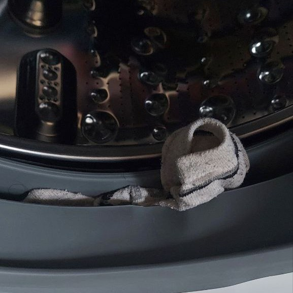

Welcome to SocklessCoin ü߶
Where do lost socks go? We might have the answer...
Find a Sock
üá¨üáß English
üá´üá∑ Fran√ßais
üá®üá≥ ‰∏≠Êñá
üá∑üá∫ –†—É—Å—Å–∫–∏–π
üá∏üᶠÿߟÑÿπÿ±ÿ®Ÿäÿ©

Try the Telegram Bot